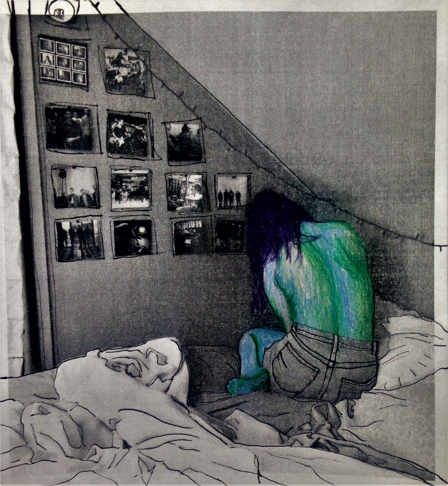
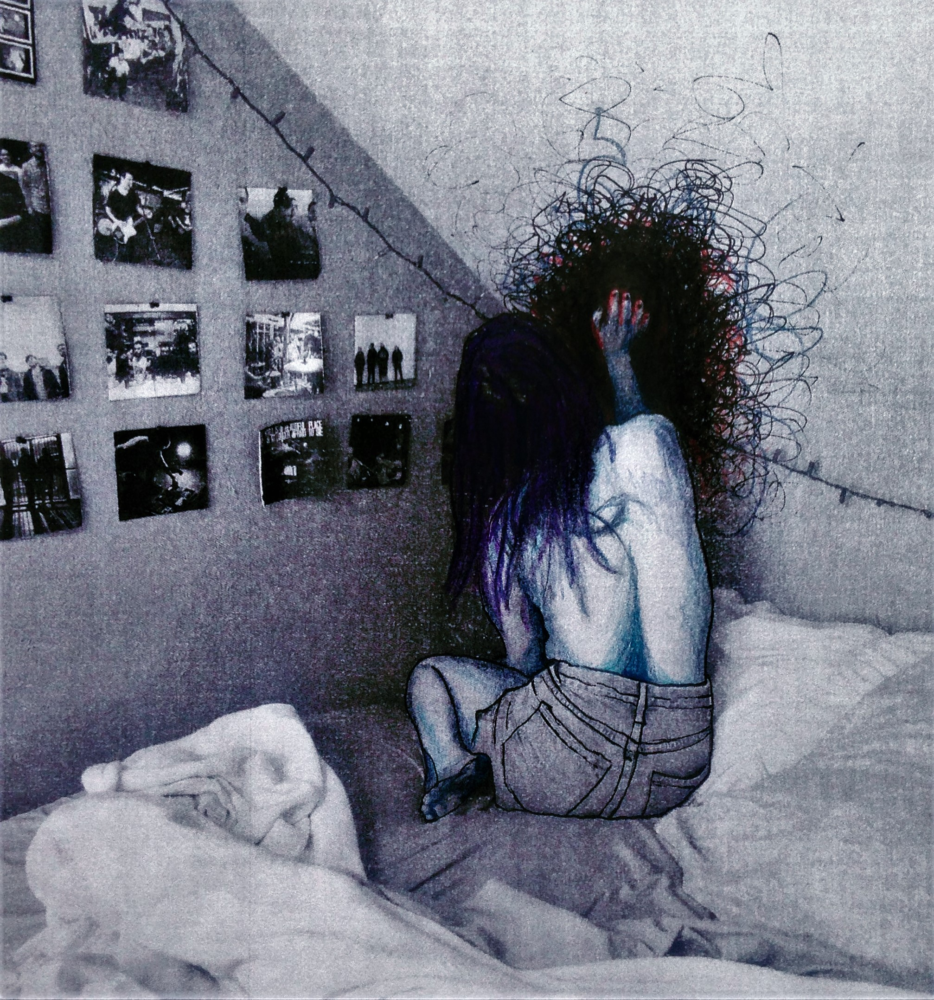
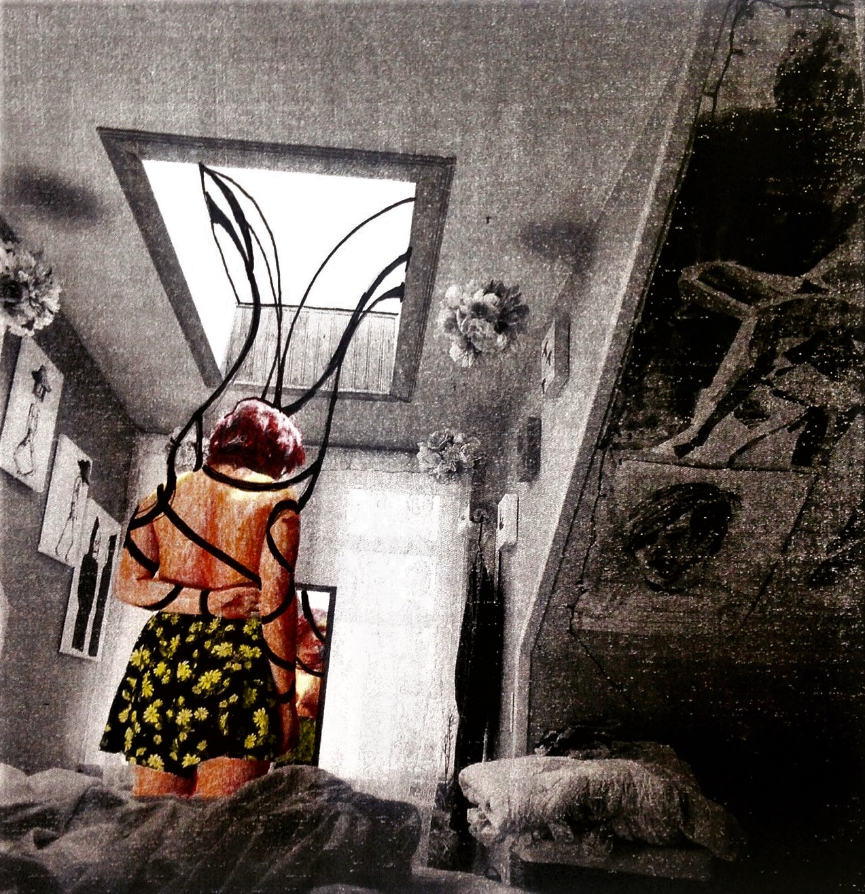
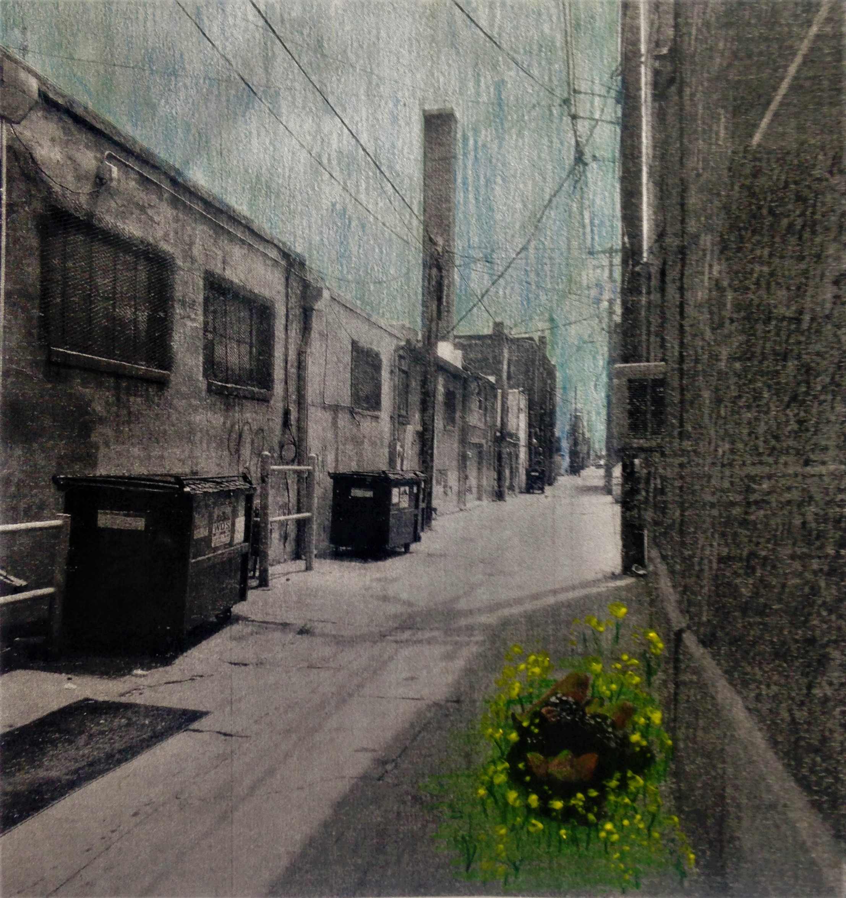
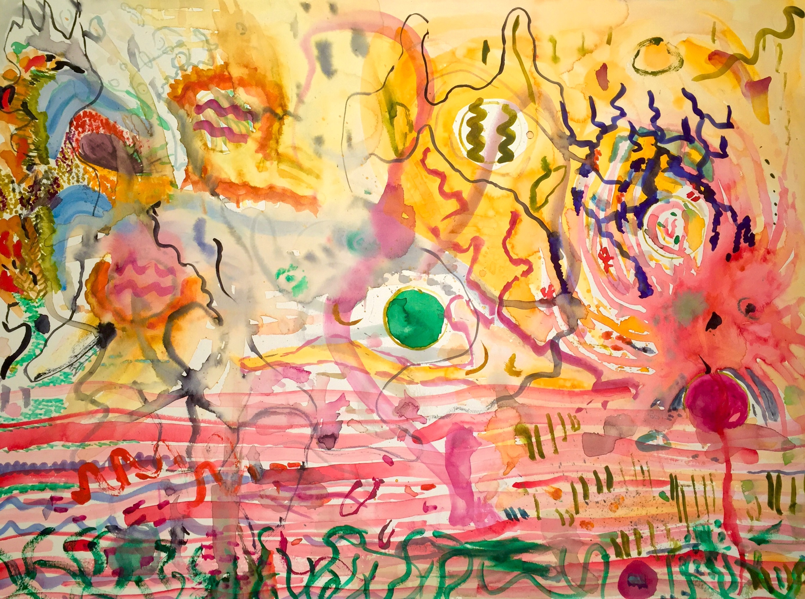

hung–
a hot-headed queen of denial
smiling through rope-choked teeth
swings above a carving block
for the pleasure of primeval kings
mistress of misery and Delphian flesh
preeminence
bought and sold
her bone weariness is whittled so deep
even the marrow is weak
all substance at attention, she stands tall
saluting
a primetime Maginot line
for a mid-morning Monday shooting
keeping with courtesy
and quiet acquiescence
her neck is bowed and bent
hung–
like a sphinx with a twisted arm
caught in a skeptic’s trap
lower your voice, longshoreman
heathen from a bad stew
you forgot your thoughts in
Vermont, forgot your tongue
in the action park where you
swept the leaves and muttered
it’s over, it’s over, four leaf clover
your face violet
as you laughed your way to Eden
so much of what you do is misshapen
like dough that won’t rise
like yelling fire! in an asbestos
insulated tomb
you have no room
to stop and then begin
to say please cancel my subscription
before the pamphlet pushers
arrive at your door
an earlock lady that says do more
as she strokes the cross that sticks flat
to the fleshy center of her chest
watching you ignore the guidance you
didn’t ask for in the first place
Hannah Thorpe is studying Writing Seminars and Philosophy at Johns Hopkins University. She is from Topanga, CA.
Next | Table of Contents
The world was erected by God or a bomb made of water.
A fish, some kind of human sized thing.
The Earth took shape and manners followed time
with suits and housewives.
College and marriage
for book clubs and Jesus.
Our ancestors labored so that we may
serve tea in an effort to be
remembered, things
forgotten.
What was once the Devil’s music
has been made into furniture
for a Dentist’s on Butternut Lane.
When the sky fell on the first day
of the first year,
I was in my pajamas,
in quite a state because the sun was shining
too brightly
and my future kids can’t read.
My father washes his hands with orchid petals and mist water. He dries, then wets them again to make emeralds out of oil in his eyes.
He sits and draws with pen what he can’t write in the newspaper and turns a blind eye as four blessings grow more tired with age—two women makes a lonely life.
There’s humor in subtlety and also in picking me up three and a half minutes late at summer camp.
He smells marijuana and hears sobbing louder than mother ever could. At night, he climbs the stairs slowly and with audible pain.
thump. thump. thump. relief.
He turns a blind eye of emerald and oil and washes his hands: orchid petals and mist water.
I can hear the bathroom water run from my bedroom. A necklace mother dropped running away from the problem hangs from my fingers like rosary beads.
He opens the door slowly, not wanting to disturb the geography of anything.
creak. cut. click. relief.
Dinner is so cold he talks mostly to himself, the voice ashen and gravel.
“I hate this smell—too sweet”
The breath is stolen from my lungs; every effort is to say sorry.
I can’t love him in the eyes.
The phone doesn’t ring to tell me he’s died.
Grace Moore is a second year at the University of Iowa majoring in English and Art History. Every poem is for her great grandmother, Grace Welch.
Previous | Next | Table of Contents
he was like the shell fixed by a parchment membrane, broken and unbroken.
(hollow hearts became less heavy in the twilight morning and I became the ghost of what is no longer. )
salt rises from the ocean wedged in his belly, the thought stretched like a tidal bulge between the open periwinkle cabinet door and his stinging ski-slope nose.
(i once carried a hundred pounds of salt in my stomach.)
there is something primal about the lines that look like cracked continents on the pasty shell of an unready chick before it hits his lips. once he said he loved the grit in messy things. the enviable moonlight filled the crevices that are miles deep between the pusillanimous secrets unhidden on his wrinkled, youthful brow.
(i once scraped at those stopping places.)
in spite of his love for arid, barren things his favorite place to stand is over the steaming hot water gushing from the achy faucet into the tin kitchen sink. he liked the way the rising steam settled his fidgeting mind and the soothing rhythm of the rushing water pulsed underneath him.
(i now know that only lonely, hot hearts are found in transmitted blue hues eating hard boiled eggs before the sun rises.)
in the blue kitchen light, deflated dreams dissolve into the consistency of a creamy waning gibbous moon, awkward and unreachable. Four hardboiled eggs in hand, he spins them on the counter like a distant deaf DJ. the crunch of the shell pressed against the white ceramic plate shatters the silent hum of this premature morning crisis.
Clara Guyton is a senior double majoring in English and Dance & Movement Studies at Emory University. In her spare time, she enjoys poetry, studying and being out in nature, playing the ukulele, and painting.
Previous | Next | Table of ContentsThe following works take inspiration from the doctored photographs of Julia Margaret Cameron and Saul Leiter. The progression of images attempts to indicate a violent disruption of isolation and an eventual precarious peace that is possible after such a disruption.




Brooke Thomas is a senior English major at Vassar College. She is a visual artist who works primarily in mixed media and is interested in and inspired by comics and graphic novels. You can find more of her work on Instagram @a.minus.art
Previous | Next | Table of Contents
I used to think I would become a writer but now
my words feel rusty at the joints;
they scuttle awkwardly from my fingers, not as smooth
as I remember them being,
not nearly as beautiful.
In the room downstairs where the Christmas tree used to be I see an image of myself,
bowl-haired and
not yet scared, playing with dolls I didn’t yet know
didn’t look like me.
Through the slats in the bannister I was able to see
my mother videotaping me and I didn’t even care.
I lived there during a time when girls were best friends with their next-door neighbors
and no one had really told me
how I was supposed to feel.
I climb the carpeted stairs now and I am reminded
of trips to the beach that felt like forever;
I would run into the ocean because I knew I would be knocked down by the waves.
The unfathomable force of the universe
made me laugh so hard. I didn’t know then that I would grow to fear the feeling
of not feeling
sand under my feet and I didn’t know then
that the next time I waded into the ocean
I would be wearing denim cutoff shorts and thinking
about a boy with blond hair; when I lived at 7 Hawthorne Drive I didn’t yet know
what would come to be
of the world’s roundness and my sharpness;
the tiny hands of my wisdom;
how things always come full circle
but never in a way that makes sense.
Allison Jiang (Johns Hopkins University) is a freshman from Holmdel, New Jersey. She hopes to one day own a big dog, play with words for a living, and set the Guinness World Record for most television watched by a human person.
Previous | Next | Table of Contents
You have a fineness that comes to mind
like inchworm
so at its window for swallow
to come and divulge —
a death that is blessing in how it
kills one to feed one
more lovely.
In June,
when the air conditioning broke,
we took to pouring salt on these
worms and slugs, just to watch their bodies
melt, the seltzer of their death
a glitter on our back patio.
I felt the breath go — but do they breathe?
— gnawing at my inner cheek like hook
through fish in Solomon's Island
our skin so gently peeling in the sun
as if painted, as if hollow
geography of loose lawn mower parts
spread out for our father to reassemble.
Do these rudimentary things have minds
that they might think about their deaths
with some sense of fear or hunger?
or in their ignorance are they brave
like also that day at the Bay when
you took my hand and stretched me toward
the open mouth of water, pushed my head below
the surface as if loving and violating
are one and the same,
wanting — I could feel in your fingers tightened around
my neck, that wanting — to tell me a secret
on the car ride home. But also not worrying
if my head would never come to lap the water,
my bulbous eyes gradually relaxing
in their sodden sockets,
my body growing limp to the water
malignant and curved like a worm
away from wind and air
and staying there.
A.D. Lauren is currently studying creative writing at Emory University in Atlanta, GA. Her work has appeared in the Apeiron Review, Spires, and elsewhere. Upon graduation, she will be pursuing an MFA in poetry at the Iowa Writer's Workshop.
Previous | Next | Table of Contents
Benjamin Fried (Johns Hopkins University) is a silly man concerned with matters of exploitation and suffering. On any given day, you can find him with a brooding demeanor contemplating where he should focus his time as to enact maximum positive change.
Anastasia Tokmakova (SCI-Arc) is a Chow Chow studying architecture in Los Angeles, California. Among her favorite things is the chocolate bar, which despite her physiology is well tolerated. Similarly, she hopes to work on making the world a better place, one free of unnecessary woe.
Previous | Table of Contents